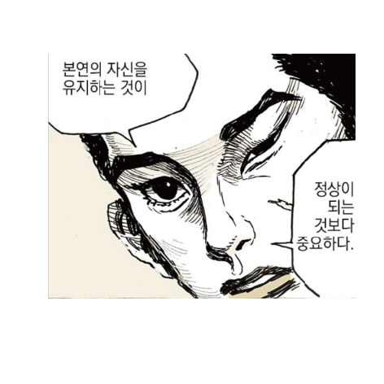
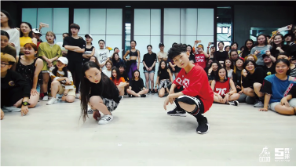

나는 올해로 9살 6살짜리
사촌동생 둘이 있다.
평범하지만 밝고 건강하게
학교생활 잘하고 친구들
사이에서도 제법 잘 지내는 것
같다. 나랑 언니는 한 달에 몇
번씩은 꼭 시간을 내서라도
동생들이랑 놀아주러 다닌다.
얼마 전에 동생들을 데리고 식당에 밥을 먹으러 갔을 때의 일이다.
식당에서는 한창 유행하고 있던 모모랜드의 ‘뿜뿜’이 나오고 있었다.
9살짜리 동생은 단번에 노래를
알아차리더니 ‘학교에서 연습하고
있는 춤’이라고 했다. 들어보니
학교 방과 후 시간에 진행되는
동아리에서 이런 방송댄스를
배우고 나중에 학예회나 그런
곳에서 공연도 하는 모양이었다.